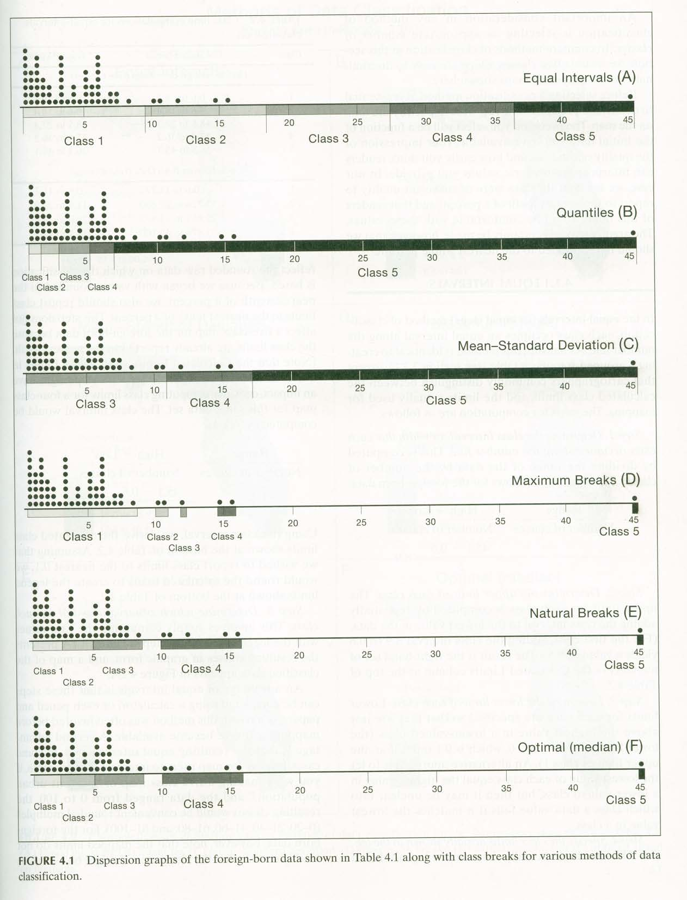

Deze presentatie:
nieneb.github.io/ghast_college
Veel links, blogs, voorbeelden, etc.! Dus klik mee

van informatie tot visualisatie
Over mij
Niene Boeijen
komende 2 uur: Over mijzelf

- Kunstacademie
- Msc Geo Information Science
- Stage
- Web Cartograaf
- Web Map Universe
- Webmapper & voorbeeld projecten
- Toekomst
Wat is jullie inspiratie? Waar wil jij naar toe?
Kunstacademie - Propedeuse
Avans Hogeschool Den Bosch
visueel
Ik maak graag verdrietige dingen mooi
Bsc Internationaal Land & Water beheer
Eerste kennismaking mset GIS
Power of Maps
everything is related to everything else, but near things are more related than distant thingsTobler's first law of geography
Power of Maps
Our brains organize by location
We have no choice but to think and see spatially
[source]MSc Geo Information Science

Maps make sense of things. They lend order to complex environments, and they reveal patterns and relationships.
Maps = Collection of Geo data
Maps organize complex data about the environment.
Reveal patterns and relationships.
Maps allow us to communicate about location using a common framework


ArcMap gedrochten...

Tip #1. Géén Defaults!
Verander de default styling in je software pakket en je doet al wat anders dan de rest
Hoe kan ik mijn kaart duidelijk en aantrekkelijk maken zodat de informatie aansluiting vind bij het grote publiek?


Wat is de kracht?
Dat wil ik ook!

Stage Geo Web Visualisatie
Waag Society- future internet lab
Heritage & Location
Power of Beautiful maps
Beautifully designed maps stimulate both sides of our brain: the right side that's intuitive and aesthetic, and the left side that's rational and analytical.
[source]Tip #2. go Beyond Bertin!
Visuele Variabelen

Categories of possible animations for dynamic phenomena.
| Change in domain | Variables | Dimensions |
|---|---|---|
| Spatial | Appearance/disappearance | Born and Die |
| Mutation | in size or shape | |
| increase/decrease (interval ratio) | ||
| grow, shrink | ||
| Movement | along trajectory | |
| boundary shift | ||
| Temporal | moment in time | |
| Pace | ||
| Duration | ||
| Sequence | ||
| Frequency | ||
| Thematic | Mutation | |
| Thematic change |
Bert:
"Als je maar geen Microsoft Word gebruikt! .. "
"Hoe dan?"
Markdown gaan leren
nieneb.github.io/InternshipReport

Tip #3. Leer programmeren


Veel tools, niet 1 antwoord
Programmeren is méér vrijheid!
Programmeren == Vrijheid
Vanaf toen:
- TopoNamen = Leaflet.js & D3.js
- Verstedelijking = D3.js & APIs
- Scriptie in LateX
- Presentaties in Reveal.js
- Stage verslag in Markdown HTML en CSS
Mijn eerste kennis making met wat er mogelijk is in het Web Map Universum
Nu ben ik
Web Cartograaf
Wat moet je kunnen als
[[Web]] Cartograaf
Tegenwoordig is een kaart niet meer een plat op papier maar vaak dynamisch, interactief en online!


There has never been more open data available than at this moment in time, and everyone from global NGOs to armchair hobbyists are using that data to create maps. [source]
Cartografie is geen niche meer:[source]
- Big data
- Massaconsumptie
- Open source sofware
- Open data
Web Mapping
- Interactie
- User-Experience
- Animatie
The realization of the interactive map as an experience, not just a map design.[source]
Web Mapping
- snelheid en schaalbaarheid
- Data-gestuurd
- Responsive ontwerp
- Gepersonaliseerd


Cartography is the new code.
 [source]
[source]
Vaardigheden
You need to be able to find, manipulate, and store spatial and non-spatial data. You need to be able to design a functional and attractive cartographic representation of that data as well as the UI controls to operate it. You need to be able to implement that design through code.[source: Axis Maps]
van Cartograaf naar ..
Data-analist / GIS-specialist
Full-stack ontwikkelaar
Interactie-ontwerper (IX)
User Experience-ontwerpter (UX)
... the demand for cartographers is projected to grow nearly 30 percent by 2024.[source]
Het Web Map Universum
Poging tot..

Data Design Code
Van Data naar het Web
Doel >> Functionaliteit >> Mapping Technologie >> Design

Data Code Design
- Laad de data
- Maak dingen werkend
- Maak dingen mooi
Doel?
Veel manieren om geo-data op het web te krijgen!
- Interactieve/statische web map
- Web GIS applicatie
- WMS/WFS
- Download link
- Animated, real time
- Collaborative web maps
- Online atlasses
- Infographic, plaatje, video, gif
Tip #4. Ben flexibel
Bij Webmapper
What the map can be
Wij maken interactieve kaarten en datavisualisaties. Onze expertise is open {source; data; standaarden}. Onze kracht is het combineren van cartografie en webtechnologie.

Bij Webmapper
Elke dag programmeren..
& creatief bezig zijn


Bij Webmapper
Open Source
Open Data
Open standaarden
Wat maak ik nu?


De gebouwen kaart
https://apps.webmapper.nl/gebouwen/Jenks natural breaks optimization
1.83 - 2.68 - 4.93 - 7.28 - 9.13 - 14.96 - 21.13 - 40.86 - 68.59 - 125.71 - 332.12 2.18 - 7.53 - 7.60 - 9.22 - 12.35 - 14.72 - 15.53 - 24.88 - 31.06 - 61.72
Tip #5. Analyse is key voor de visualisatie
Tip #6. Een kaart is méér dan alleen de kaart. Alles eromheen verteld ook het verhaal.
Paradijs in de polder kaart
Demo
Tip #7. Een polygoon hoeft geen polygoon te zijn, een lijn geen lijn, een punt geen punt...
Utrecht in Vogelvlucht
utrechtinvogelvlucht.nlTip #8. Ben creatief! Probeer eens wat anders.

Verre toekomst? ..
 [source]
[source]


Waar denken jullie dat het heen gaat?
Samenvattend
- Tip #1. Géén Defaults!
- Tip #2. go Beyond Bertin!
- Tip #3. Leer programmeren
- Tip #4. Ben flexibel
- Tip #5. Analyse is key voor de visualisatie
- Tip #6. Een kaart is méér dan alleen de kaart. Alles eromheen verteld ook het verhaal.
- Tip #7. Een polygoon hoeft geen polygoon te zijn, een lijn geen lijn, een punt geen punt...
- Tip #8. Ben creatief! Probeer eens wat anders.
Kom een keer langs!
Stages lopen? Werk of vragen over mogelijk werk?
Meer?
Meer over mij...
Bedankt!
niene@webmapper.net
Wat inspireert jullie?
Waar wil jij naar toe?
Analyse, vragen en discussie